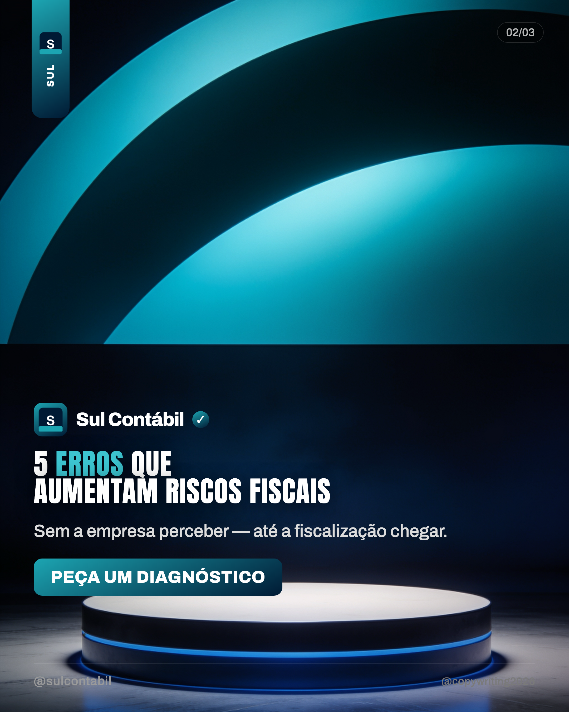
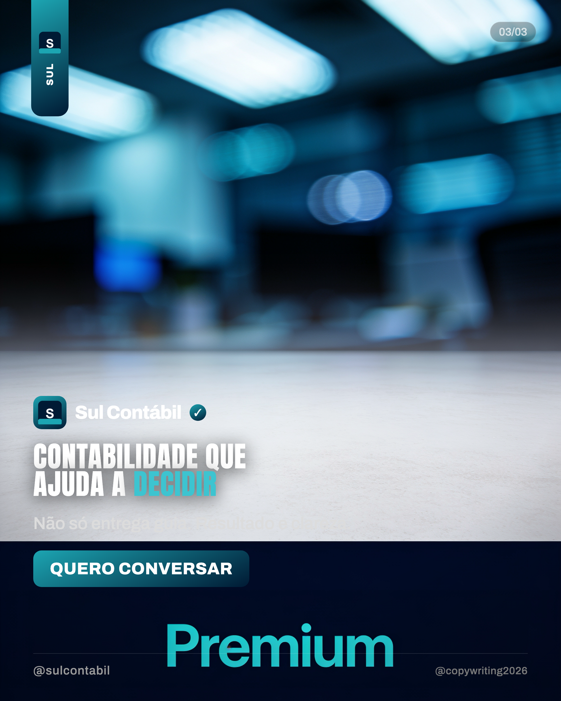

01 · DorSua empresa fatura mas não cresce?


Rascunhos (Seedream + compositor tema escuro + paleta da marca).
Referências em marcas/sul-contabil/referencias/.
No Editor: marca Sul Contábil · tema escuro ·
criar post ·
editar marca.